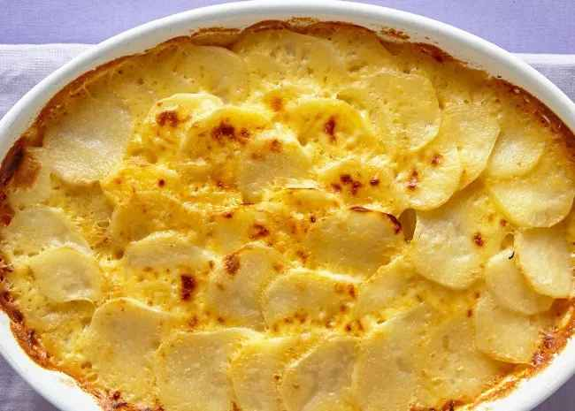

Gratin Potatoes

Description
These au gratin potatoes are my husband's favorite —
he considers it a special occasion every time I make them!
The creamy cheese sauce and tender potatoes in this classic
French dish make a delicious flavor combination. Serve potatoes
au gratin with a roast pork loin or beef tenderloin, alongside a green salad.
There's nothing like au gratin potatoes to take any meal over the top.
The creamy, decadent, and oh-so satisfying recipe is sure to please
everyone at your table.
- Potatoes: This recipe starts with thinly sliced Russet potatoes. You can substitute Yukon gold, if you like.
- Onion: Slice one onion into rings to layer with the potatoes.
- Seasonings: These creamy au gratin potatoes are simply seasoned with just salt and pepper.
- Butter and flour: The cheese sauce starts with a roux made with butter and all-purpose flour.
- Milk: Make sure you slowly whisk in the milk to create the creamiest consistency.
- Cheese: Because isn't everything better with shredded Cheddar?
How to Make Au Gratin Potatoes
- Assemble the casserole: Layer half of the potatoes in the bottom of the prepared baking dish. Season. Layer onion slices over top, then top with remaining potatoes. Season again.
- Make the sauce: Melt the butter in a saucepan. Gradually whisk in flour and salt and cook for about 1 minute. Gradually whisk in the milk. Cook, whisking constantly, until the mixture has thickened. Stir in the cheese.
- Bake the casserole: Pour the sauce over the potatoes. Cover the dish with foil and bake in the preheated oven until the potatoes are tender and the sauce is bubbling.